Bedingte Wahrscheinlichkeit
1. Definition
Sei  ein Wahrscheinlichkeitsraum und 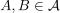 mit 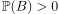.
Dann heißt
ein Wahrscheinlichkeitsraum und 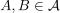 mit 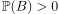.
Dann heißt
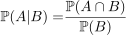
1
bedingte Wahrscheinlichkeit von A unter der Bedingung B (gegeben B).
Sei ein W-Raum 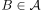 mit  dann ist 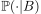 ein Wahrscheinlichkeitsmaß auf 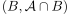
wobei
dann ist 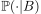 ein Wahrscheinlichkeitsmaß auf 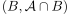
wobei
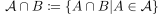
2